Prototype Gate 2 · r1 — Scenes 2–4, every beat at its settled state
All 17 builds mounted cold and captured settled. APPROVED marks a landed state that is an approved
still’s composition; DERIVED marks a state derived from the nearest approved frame’s system — the r1 report lists
each derivation. The presenter’s review medium is the live prototype: ?proto=gate2 on the dev server,
birth treatment via ?birth=1|2|3 or keys 1/2/3 on Scene 3.
Scene 2 — The Direct Exchange (5 beats)
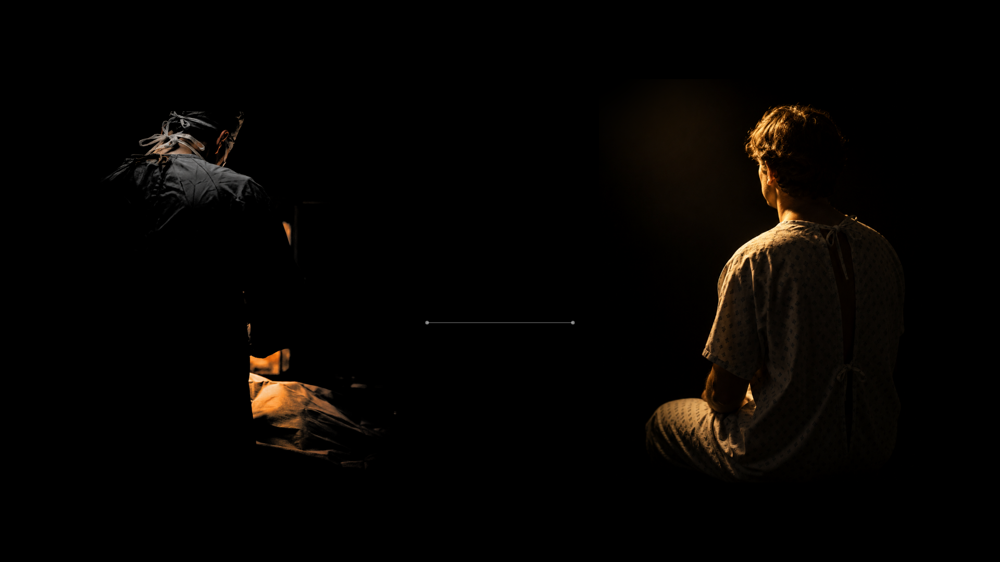
Beat 1 · DERIVED — the stage assembles: s2-f1-final minus the capabilities
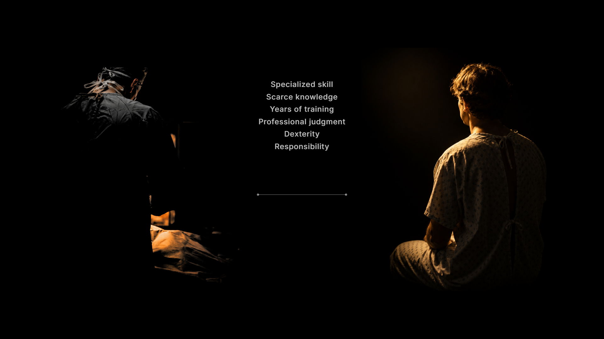
Beat 2 · APPROVED — s2-f1-final: capabilities landed, the patient received
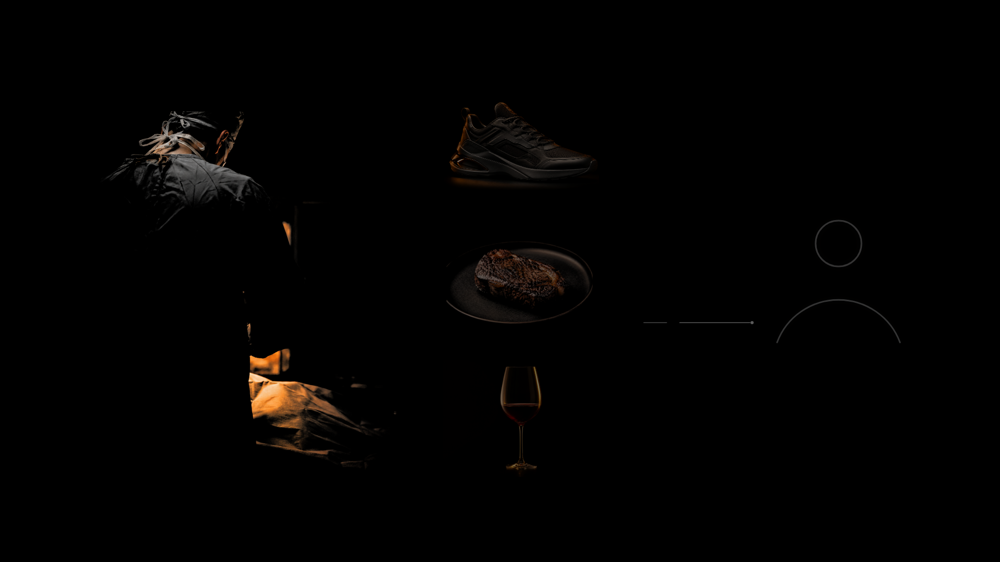
Beat 3 · DERIVED — the return path attempting, from s2-f2’s systemBeat 4 · APPROVED — s2-f2: the failure state
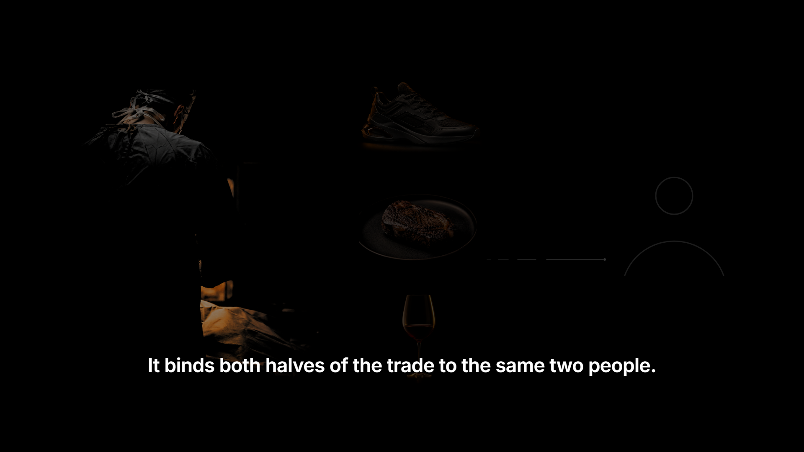
Beat 5 · DERIVED — the binding line at display scale, the failure receded
Scene 3 — The Breakthrough (7 beats)
Beat 1 · APPROVED — s3-f1-final: the birth, mid-contractionBeat 2 · DERIVED — the contraction complete, the claim held between themBeat 3 · DERIVED — the patient released
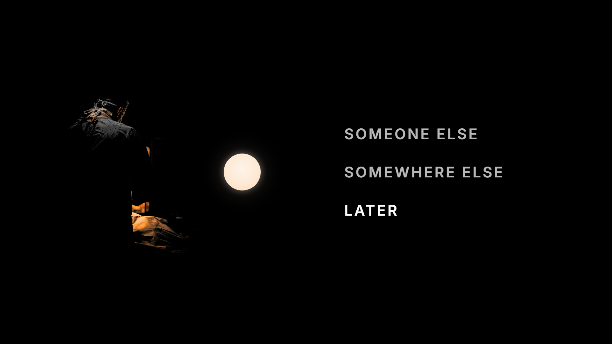
Beat 4 · APPROVED — s3-f2-a: the open interval
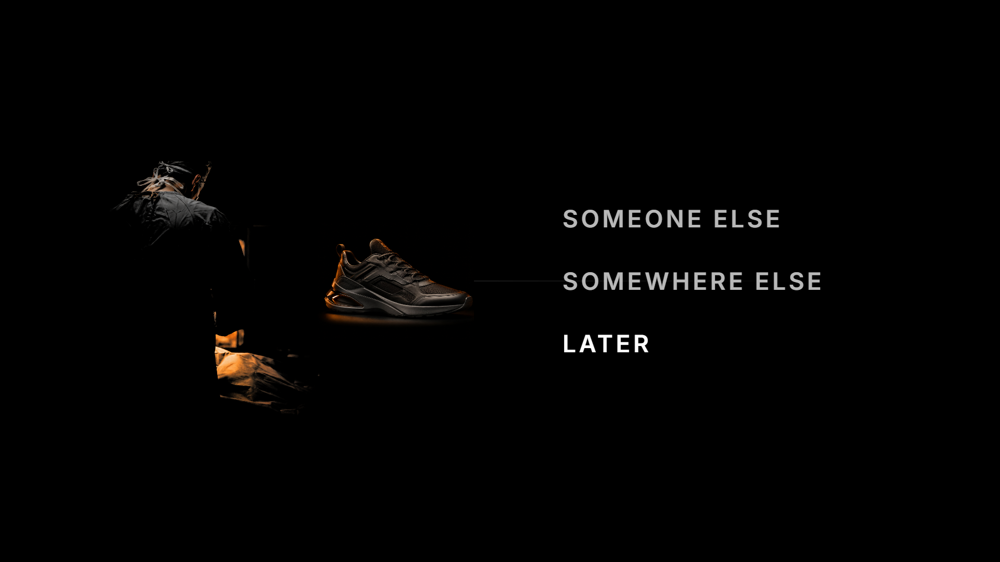
Beat 5 · DERIVED — the completion demonstration’s end, from s4-f1’s systemBeat 6 · APPROVED — s3-f2-a again: the reset to the held claim
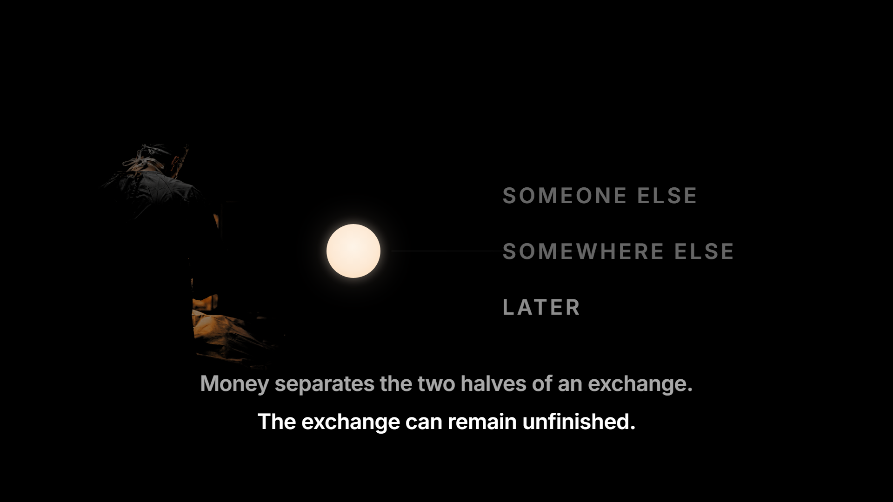
Beat 7 · DERIVED — the separation and unfinished pair, the interval receded
Scene 4 — Spend or Save (5 beats)
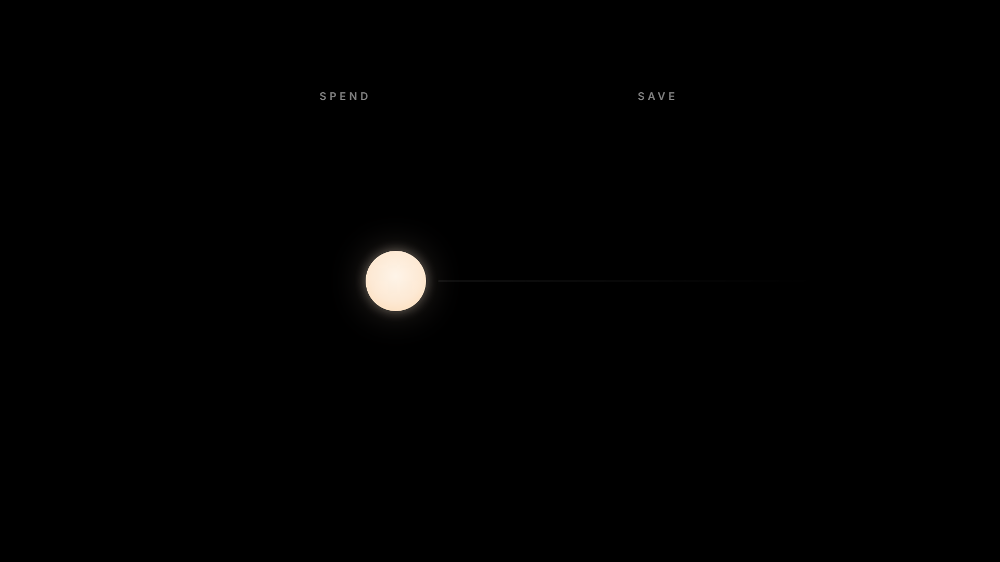
Beat 1 · DERIVED — the fork named over the held claim
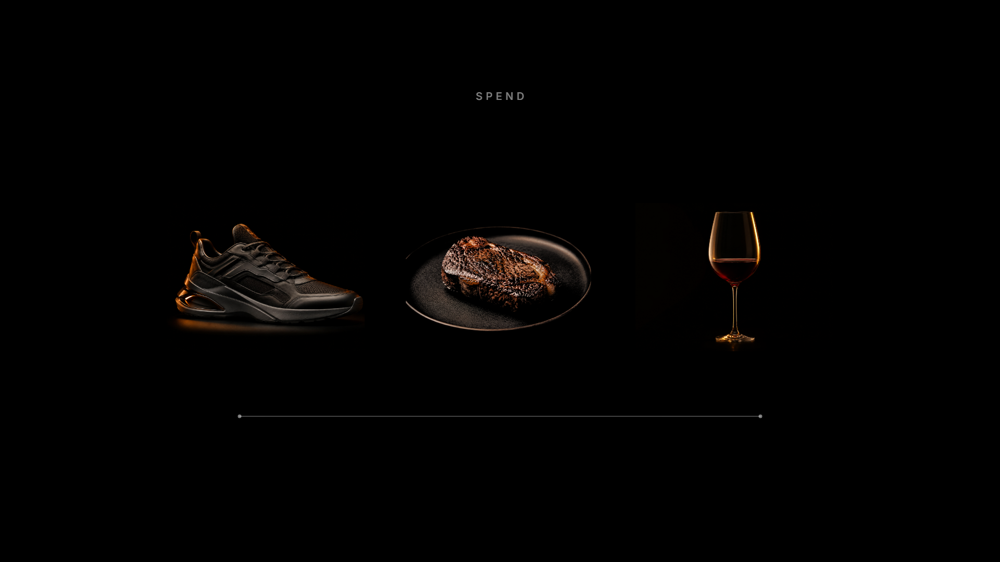
Beat 2 · APPROVED — s4-f1: SPEND resolved
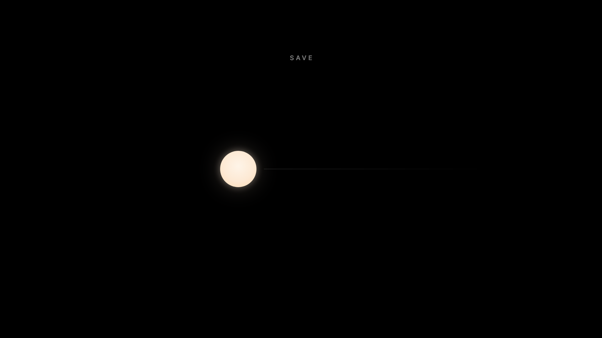
Beat 3 · DERIVED — the held claim restored, SAVE aloneBeat 4 · DERIVED — s4-f2-a minus the pair: the interval stretched
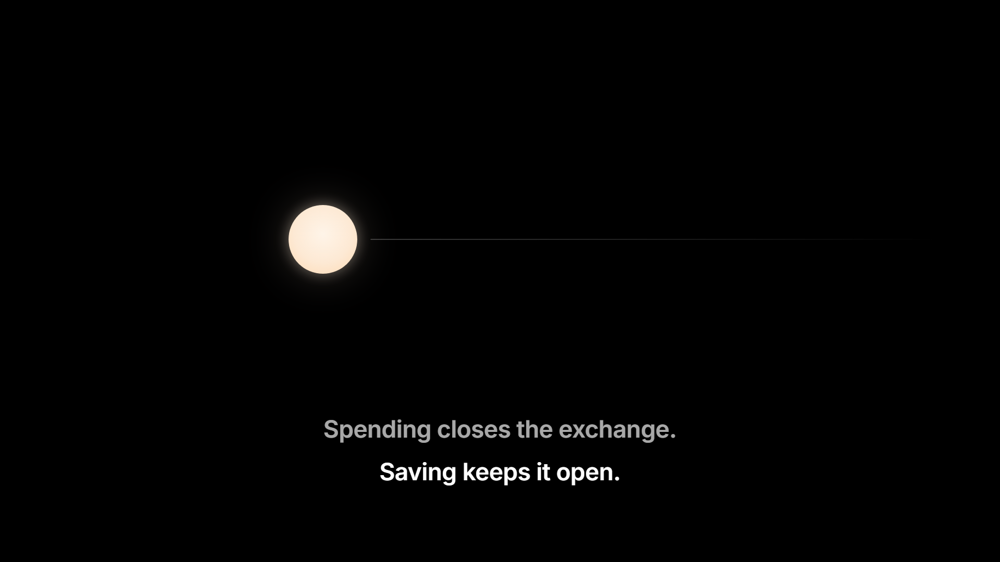
Beat 5 · APPROVED — s4-f2-a: the closing pair
The birth — three treatments, mid-gesture (settled state identical: s3-f1-final)